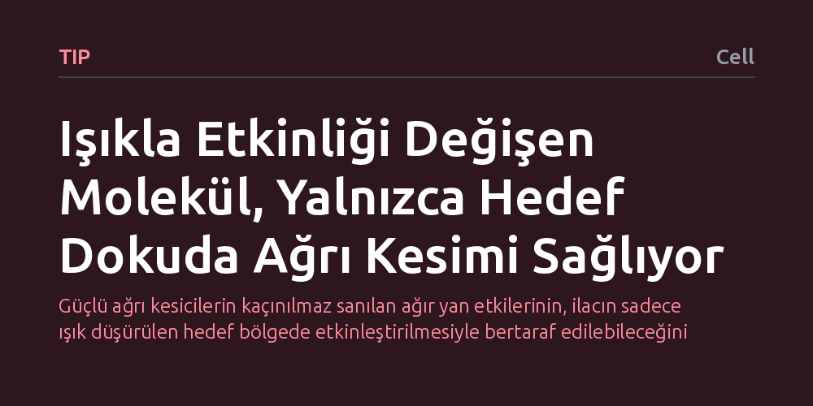

TIP · Cell · 2026-10-17
Araştırmacılar, opioidlerin bağımlılık ve solunum baskılanması gibi yan etkilerini azaltmak için ışıkla açılıp kapanabilen yeni bir molekül geliştirdi. AM-3 adlı bu kimyasal, ışık uyaranıyla düşük ve yüksek etkinlik durumları arasında geçiş yaparak hem hücrelerde hem canlılarda ağrıyı bölgesel olarak dindirdi.
Güçlü ağrı kesicilerin kaçınılmaz sanılan ağır yan etkilerinin, ilacın sadece ışık düşürülen hedef bölgede etkinleştirilmesiyle bertaraf edilebileceğini gösteriyor.

Morfin ve türevi opioidler, tıpta şiddetli ağrıları dindirmede asırlardır en güçlü araçlar arasında yer alır. Ancak bu ilaçlar kana karıştığında yalnızca ağrının doğduğu bölgeye değil, bütün vücuda ve özellikle beyne yayılır. Merkezi sinir sistemindeki reseptörlerin kontrolsüzce uyarılması; solunumun baskılanması, aşırı uyuşukluk, tolerans gelişimi ve hızla bağımlılığa sürüklenme gibi ölümcül sonuçlar doğurabilmektedir. Tıp dünyası uzun süredir şu can alıcı sorunun yanıtını aramaktadır: Ağrı kesici etkiyi sistemik yan etkilerden ayırıp yalnızca ağrının olduğu bölgeye hapsetmek mümkün müdür?
Geleneksel farmakolojide bir hap alındığında veya damardan ilaç verildiğinde molekül tüm dolaşım sisteminde gezinir ve temas ettiği her uygun reseptörü tetikler. Bu durum özellikle kanser ağrısı, cerrahi sonrası travmalar veya kronik iltihabi durumlarda hastaların yaşam kalitesini ciddi biçimde düşürür. İlacın hedef dokuda istenildiği anda açılıp kapatılabileceği, yani uzamsal ve zamansal olarak denetlenebileceği bir mekanizma kurulabilirse, opioid krizine neden olan pek çok yan etkinin önüne geçilebilir.
Araştırmacılar bu sorunu çözmek için fotofarmakoloji, yani ışıkla denetlenen ilaç tasarımı yaklaşımını benimsedi. Ekip, mü-opioid reseptörlerine bağlanabilen kimyasal bir omurgayı ışığa duyarlı bir azo grubuyla birleştirerek 'Azo-morfin-3' (kısaca AM-3) adını verdikleri yeni bir bileşik sentezledi. Bu molekül, karanlıkta veya belirli bir dalga boyundaki ışık altında pasif ya da çok düşük etkinlikte kalırken, farklı bir dalga boyunda ışığa maruz bırakıldığında şekil değiştirerek yüksek etkinlik durumuna geçebilmektedir.
Tasarlanan bu ışık anahtarı, hem laboratuvarda izole edilmiş hücre kültürlerinde (in vitro) hem de yaşayan hayvan modellerinde (in vivo) sınandı. Bilim insanları, molekülün mü-opioid reseptörleriyle kurduğu yapısal ilişkileri takip ederek, ışık uyarımıyla reseptör etkinliğinin beyinde ve çevresel sinir uçlarında nasıl değiştiğini deneysel ağrı modelleri üzerinde adım adım inceledi.
Yapılan deneyler, AM-3 molekülünün ışık uyarımıyla düşük ve yüksek etkinlik halleri arasında geri dönüşümlü olarak gidip gelebildiğini gösterdi. Dokuya ışık verildiğinde molekül anında yüksek etkinlik moduna geçerek mü-opioid reseptörlerini etkinleştirdi ve ağrı sinyallerinin iletimini kesti; ışık kesildiğinde ya da tersine çevrildiğinde ise reseptör etkinliği hızla başlangıç düzeyine döndü.
En dikkat çekici bulgu ise bu kontrolün hem beyin dokusunda hem de çevresel dokularda hassas bir şekilde sağlanabilmesi oldu. Geleneksel opioidlerin tüm vücuda yayılarak yarattığı sistemik baskı yerine, AM-3 yalnızca ışığın yönlendirildiği bölgede güçlü analjezi sağladı. Böylece klasik ağrı kesicilerle karşılaştırıldığında sistemik yan etkilerin belirgin biçimde azaldığı gözlemlendi.
Elde edilen sonuçlar, opioidlerin biyolojik etkinliğinin yapısal temellerini anlamak açısından önemli bir moleküler araç sunmaktadır. İlacın her yerde değil, sadece acı çeken sinir grubunun üzerinde etkinleşmesi, gelecekte lokal cerrahilerde, diş hekimliğinde veya hedefe yönelik kronik ağrı tedavilerinde yepyeni protokollerin önünü açabilir.
Bununla birlikte, çalışmanın henüz hayvan modelleri ve hücre deneyleriyle sınırlı bir ön aşamada olduğunu unutmamak gerekir. İnsan vücudunun derin dokularına ışığı güvenle iletebilecek optik aygıtların geliştirilmesi ve AM-3 molekülünün insan metabolizmasındaki uzun vadeli güvenliğinin kanıtlanması gibi aşılması gereken ciddi teknik engeller bulunmaktadır.